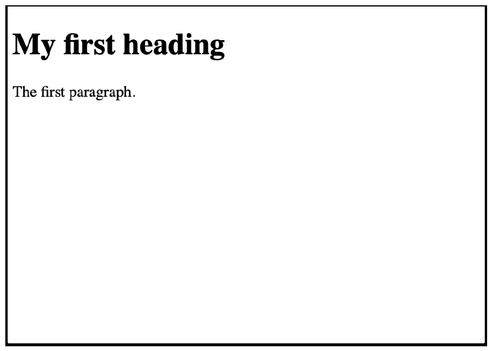
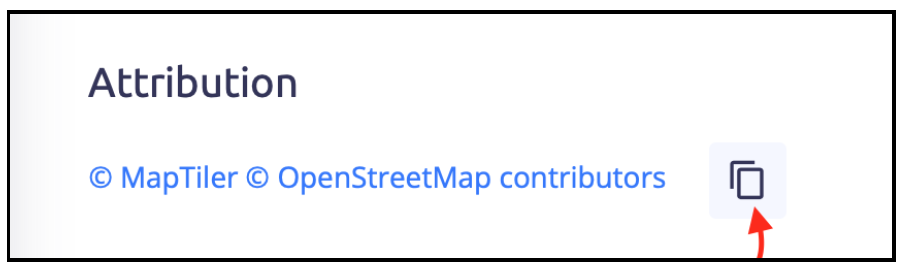
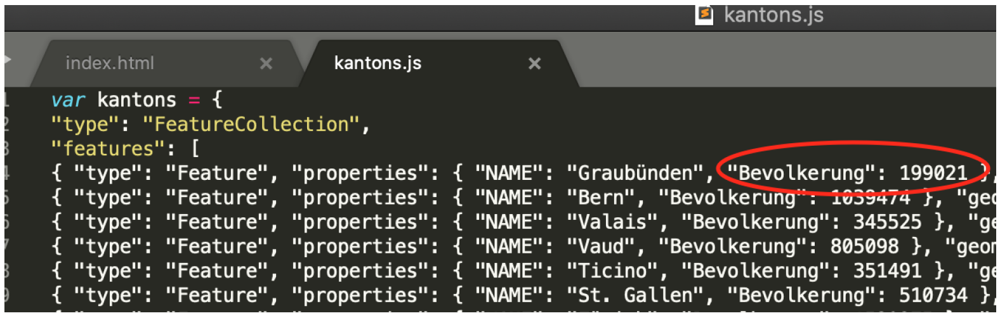
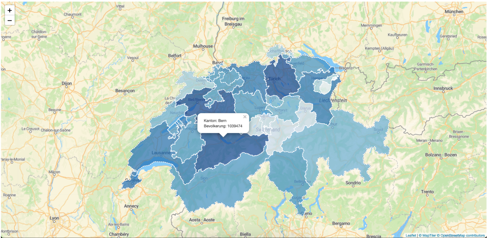

(Optional) Übung Leaflet
Übung 1: Erste Schritte mit HTML
Die HyperText Markup Language (HTML) ist die Standard Markup Language für Inhalte, die in einem Webbrowser angezeigt werden sollen. Einfach ausgedrückt ist HTML die Sprache um den Inhalt einer Webseite zu definieren. Praktisch alle Webseiten basieren auf HTML.
Lass uns mit einem einfachen Editor eurer Wahl ein erstes einfaches HTML-Dokument erstellen.
Vorgeschlagene Editoren:
Öffnet den Editor Eurer Wahl und erstellt eine grundlegende HTML-Struktur, indem ihr das folgende Codefragment einfügt.
<!DOCTYPE html>
<html>
<head>
<title>Page title</title>
</head>
<body>
<h1>My first heading</h1>
<p>The first paragraph.</p>
</body>
</html>Speichert das Dokument als index.html in Eurem Arbeitsverzeichnis ab und öffnet es in einem von euch bevorzugten Browser. Ihr solltet etwas ähnliches wie die folgende Abbildung sehen (Abbildung 69.1).

Alle HTML-Dokumente müssen mit einer Dokumenttyp-Deklaration beginnen: <!DOCTYPE html>. Das HTML-Dokument selbst beginnt mit <html> und endet mit </html>. Der sichtbare Teil des HTML-Dokuments liegt zwischen <body> und </body>. In diesem Abschnitt haben wir unsere erste Überschrift <h1></h1> positioniert, sowie das HTML-Element <p></p>, welches einen Absatz innerhalb des Body-Abschnitts definiert. Mehr zum Thema fHTML-Elemente findet Ihr unter folgendem Link HTML Elemente.
Übung 2: Erste Schritte mit JavaScript und der Leaflet-Bibliothek
In der Welt der Webentwicklung ist HTML die Basis von allem, da es uns die Möglichkeit gibt, unsere Inhalte im Web darzustellen. Das, was die Dinge wirklich interessant und interaktiv macht, ist jedoch JavaScript. JavaScript ist im Moment die beliebteste Programmiersprache der Welt. Wenn HTML den Inhalt der Webseite definiert, definiert JavaScript dessen Verhalten. In HTML wird der JavaScript-Code zwischen den Tags <script> und </script> in einem beliebigen Teil unseres HTML-Codes (Head oder Body) eingefügt.
In dieser Übung verwenden wir zur Entwicklung einer einfachen Webkarte die Library Leaflet. Leaflet ist die beliebteste Open-Source-JavaScript-Library für die Entwicklung interaktiver Webkarten. Ihr Hauptvorteil besteht darin, dass sie effizient auf allen wichtigen Desktop- und Mobilplattformen läuft und auf einer einfach zu verwendenden und gut dokumentierten Anwendungsprogrammierschnittstelle (API) basiert.
- Geht zurück in Euer HTML-Dokument, das Ihr in Übung 1 erstellt habt und löscht die Elemente
<h1>und<p>, sodass nur noch der leere<body>übrig ist.
Als nächsten Schritt werden wir ein <div>-Element für die Definition unserer Karte erstellen. Ein <div> HTML-Element ist ein allgemeiner Container, der keine Auswirkung auf den Inhalt oder das Layout hat, bis er in irgendeiner Art und Weise mit Hilfe einer Styling-Sprache angesteuert wird. Hier kommt der dritte wichtige Akteur der Webentwicklung ins Spiel. Nämlich die Sprache Cascading Style Sheets kurz CSS. CSS ist die Sprache, die verwendet wird, um ein HTML-Dokument zu gestalten und um zu beschreiben, wie unsere Inhalte im Web dargestellt werden sollen. In HTML wird der CSS-Code zwischen den Tags <style> und </style> innerhalb der <head>-Tags eingefügt.
Erstellt ein div-Element, um die Karten-ID festzulegen, damit wir unsere Karte gestalten können.
<div id = "map"></div>Verwendet den # CSS-Selektor CSS-Selektoren innerhalb der
<style></style>-Tags, um unsere Karte auf Vollbild zu setzen, indem Ihr die absolute Positionierung in die Ecken setzen.<style> #map {position: absolute; top: 0; bottom: 0; left: 0; right: 0;} </style>Nun werden wir die Leaflet-Bibliothek in unser File einbinden. Geht dazu auf Leaflet. Kopiert die folgenden zwei Codezeilen, welche die Leaflet CSS- und JavaScript-Dateien enthalten, in den Head-Bereich Eures HTML-Dokuments.
<link rel="stylesheet" href="https://unpkg.com/leaflet@1.9.3/dist/leaflet.css" integrity="sha256-kLaT2GOSpHechhsozzB+flnD+zUyjE2LlfWPgU04xyI=" crossorigin="" /> <script src="https://unpkg.com/leaflet@1.9.3/dist/leaflet.js" integrity="sha256-WBkoXOwTeyKclOHuWtc+i2uENFpDZ9YPdf5Hf+D7ewM=" crossorigin=""></script>Als nächstes erstellen wir eine neue Variable (innerhalb von
<script></script>), welcher wir unsere bereits definierte Karte zuweisen. Im Folgenden definieren wir das Zentrum unserer Karte sowie die gewünschte Schärfeebene.var map = L.map('map', {center: [46.944, 8.028], zoom: 8}); // Focus on SwitzerlandUm einen geigneten Tile Layer zu finden, könnt Ihr die Website Maptiler durchforsten. Wählt eine Map die Euch gefällt aus, scrollt nach unten zu den Tiles und kopiert den Link (siehe Abbildung 69.2).

Abbildung 69.2: Tile kopieren Fügt den Link mit der Methode L.tileLayer() hinzu. Diese Methode von Leaflet erlaubt es uns den Tile Layer zu hosten (Leaflet-Erweiterungsmethoden). Aus Referenzierungsgründen ist es wichtig das Wir auch die Attribution hinzufügen (siehe Abbildung 69.3), welche am Ende der gleichen Webseite zu finden ist (Tipp: Ihr könnt diesen Schritt aus dem Code unten kopieren).
Füge schliesslich alles mit der Methode addTo(map) zu unserer Karte hinzu.

Abbildung 69.3: Kopieren der Attribution für die Nennung der Autoren
Um die Daten zu erhalten, müsst Ihr ein kostenloses Konto erstellen. (Ihr könnt dazu eure ZHAW-E-Mail-Konto verwenden).
Nachdem Ihr die oben genannten Schritte durchgeführt habt, sollte Euer Code wie folgt aussehen:
<!DOCTYPE html>
<html>
<head>
<link rel="stylesheet" href="https://unpkg.com/leaflet@1.9.3/dist/leaflet.css" integrity="sha256-kLaT2GOSpHechhsozzB+flnD+zUyjE2LlfWPgU04xyI=" crossorigin="" />
<script src="https://unpkg.com/leaflet@1.9.3/dist/leaflet.js" integrity="sha256-WBkoXOwTeyKclOHuWtc+i2uENFpDZ9YPdf5Hf+D7ewM=" crossorigin=""></script>
<style>
#map {position: absolute; top: 0; bottom: 0; left: 0; right: 0;}
</style>
</head>
<body>
<div id = "map"></div>
<script>
var map = L.map('map', {center: [46.944, 8.028],zoom: 8});
L.tileLayer('https://api.maptiler.com/maps/streets-v2/256/{z}/{x}/{y}.png?key=4X87DmrzALHNsvjVPyhW', {attribution: '<a href="https://www.maptiler.com/copyright/" target="_blank">© MapTiler</a> <a href="https://www.openstreetmap.org/copyright" target="_blank">© OpenStreetMap contributors</a>'}).addTo(map);
</script>
</body>
</html>- Speichert das Dokument (index.html) und öffnet es in Eurem bevorzugten Browser. Das Ergebnis sollte ähnlich aussehen wie Abbildung 69.4.

Übung 3: GeoJson-Datei zur Webkarte hinzufügen
GeoJson ist ein sehr verbreitetes Dateiformat zur Kodierung einer Vielzahl von geografischen Datenstrukturen. In der Webkartenentwicklung können GeoJson Variablen innerhalb einer JavaScript-Datei zugewiesen werden.
Ladet von Moodle die Übungsdateien herunter und speichert alles im gleichen Ordner, in dem Euer Dokument index.html liegt. Einer der Hauptvorteile von JavaScript ist, dass es sich gut in ein HTML-Dokument integrieren lässt. Mit den Tags `
<script></script>können wir beliebig viele JavaScript-Dateien mit dem Haupt-HTML-Dokument verknüpfen. Dies werden wir mit der Datei kantons.js tun.Verknüpft die Datei kantons.js im Head Eueres Dokuments (nach dem Leaflet Script) wie folgt:
<script src="kantons.js"></script>Öffnet nun die Datei kantons.js und kopiert den Namen der Variable, in der die Geojson-Daten gespeichert sind. Fügt diese anschliessend wie folgt zu Eurer Karte hinzu:
L.geoJSON(nameOfTheVariable).addTo(map);
Nach dem Speichern und Aktualisieren Eures index.html-Dokuments sollte Eure Karte wie Abbildung 69.5 aussehen.

Übung 4: Farbe in die Webkarte einbringen
Das Ziel dieser Übung ist die Entwicklung einer interaktiven Choroplethenkarte. Jeder der räumlichen Einheiten (Kanton der Schweiz), wird eine Farbe zugewiesen. Jede Farbe basiert dabei auf einem spezifischen Geojson-Attribut, in unserem Fall die Bevölkerungszahl jedes Kantons.
- Öffnet erneut die Datei kantons.js und untersuchet die Geojson-Datei. Suchet nach dem Attribut welches die Bevölkerungszahl der Kantone representiert (siehe Abbildung 69.6).

Als Nächstes werden wir die folgenden beiden Funktionen (getColor(d), style(feature)) verwenden, um jedem Kanton eine Farbe auf der Grundlage seiner Bevölkerungszahl zuzuweisen. Kopiert die folgenden Funktionen und fügt diese nach der map-Variablen in Euer Dokument ein.
function getColor(d) { return d > 1000000 ? '#084594' : d > 500000 ? '#2171b5' : d > 200000 ? '#4292c6' : d > 100000 ? '#6baed6' : d > 50000 ? '#9ecae1' : d > 20000 ? '#c6dbef' : d > 10000 ? '#deebf7' : '#f7fbff'; } function style(feature) { return { // using the population property as argument fillColor: getColor(feature.properties.Bevolkerung), weight: 2, opacity: 1, color: 'white', dashArray: '3', fillOpacity: 0.7 }; }Die erste Funktion (getColor(d)) gibt das Argument d als Farbcode (z.B.
#9ecae1) zurück, nachdem dessen Wert überprüft wurde. Wenn d zum Beispiel grösser als 1’000’000 ist, erhalten wir die Farbe#084594.Die Funktion (getColor(d)) wird dann innerhalb der zweiten Funktion (style(feature)) aufgerufen und nimmt als Argument das Attribut Bevolkerung der Variable kantons, die in der Datei kantons.js gespeichert ist. Schliesslich weist die Funktion style(feature) als Füllfarbe (fillColor) das Ergebnis der Funktion getColor(d) zu.
Wir fügen nun als Style-Eigenschaft unseres L.geoJson-Objekts die Funktion style(feature) wie folgt hinzu:
L.geoJSON(kantons, {style: style}).addTo(map);
Nachdem Euer Dokument gespeichert und Euer Browser aktualisiert ist, sollte Eure Karte wie Abbildung 69.7 aussehen.

Übung 5: Hinzufügen von Interaktion zur Webkarte
Nachdem wir die Choroplethenkarte entwickelt haben, wäre es schön, wenn wir ihr etwas Interaktivität geben könnten. Dazu verwenden wir eine der wichtigsten Funktionen von JavaScript, den Event Listener. Kurz gesagt definieren Event Listener die Art und Weise, wie die Endbenutzer mit dem Webinhalt interagieren können. Der wohl bekannteste ist der Onclick-Listener. Onclick-Listener definieren, was passiert, wenn der Benutzer irgendwo auf der Seite klickt. In unserem Fall ist es unser Ziel, dass wir auf jede räumlichen Einheiten (Kantone) in unserer Karte klicken können und wir im Gegenzug möglichst viele Informationen zurückerhalten. Genauer gesagt wollen wir, dass bei jedem Klick auf einen Kanton der Name und die Bevölkerungszahl auf dem Bildschirm angezeigt wird.
In einem ersten Schritt müssen wir sicherstellen, dass unsere GeoJSON-Ebene über eine Variable zugänglich ist, indem wir sie vor unseren Listenern definieren.
Erstellt eine Variable mit dem Namen geojson, direkt nach der Variable map wie folgt:
var map = L.map("map", {center: [46.984, 8.950], zoom:7}); // focus on Switzerland var geojson;Zuerst definieren wir, was bei einem Klick passieren soll. In userem Fall soll ein Popup mit dem Namen und der Bevölkerungszahl des Kontons erscheinen. Die Funktion sieht wie folgt aus:
function showInfo(e) { geojson.bindPopup("Kanton: " + " " + e.target.feature.properties.NAME + '</b><br />' + "Bevolkerung: " + e.target.feature.properties.Bevolkerung); }In der obigen Funktion (showInfo(e)) verknüpfen wir mit unserer Geojson-Variable ein Popup-Objekt (Leaflet popup), in das wir einen Text sowie die Attribute NAME und Bevolkerung jedes der in unserem e.target-Objekt enthaltenen räumlichen Merkmale einbinden. In unserem Fall ist das e.target-Objekt die Variable kantons (gespeichert in der Datei kantons.js). (Mehr über e.target)
Als nächsten Schritt verwenden wir die Funktion onEachFeature, um die Funktion showInfo(e) mit dem onclick-Listener zu verknüpfen. Dies ist die Standardfunktion zur Verknüpfung der JavaScript-Listener mit den jeweiligen Funktionen, die für die Ausführung einer bestimmten Aufgabe erstellt wurden. Wir hätten zum Beispiel eine andere Funktion definieren können, die jedes Mal aufgerufen wird, wenn wir den Mauszeiger über ein bestimmtes Element unserer HTML-Struktur bewegen. In unserem Fall definieren wir den onclick listener wie folgt:
function onEachFeature(feature, layer) { layer.on({ click: showInfo }); }Der letzte Schritt besteht darin, unsere GeoJSON-Ebene anzupassen, indem wir ihr die Option onEachFeature hinzufügen (L.geoJson documentation).
geojson = L.geoJson(kantons, { style: style, onEachFeature: onEachFeature }).addTo(map);
Nachdem Ihr Eure HTML-Struktur aktualisiert habt, speichert Eure Datei index.html und aktualisiert den Browser. Versucht nun auf der Karte herumzuklicken und schaut was passiert. Ihr solltet etwas ähnliches sehen wie Abbildung 69.8.

Übung 6: Der Webkarte eine Legende hinzufügen
Um eine Legende zu unserer Webkarte hinzuzufügen, werden wir JavaScript und CSS verwenden.
Verwendet die beiden verbleibenden Dateien control.js und control.css (zu finden im Ordner data). Speichert diese beiden Dateien in Eurem Arbeitsverzeichnis (der Pfad, in dem sich auch index.html und kantons.js befinden)
Verknüpft diese beiden Dateien mit Eurem Haupt-HTML-Dokument am Ende des Body-Abschnitts wie folgt.
<!-- Linking the js and css code for the legend --> <script src="control.js"></script> <link rel="stylesheet" type="text/css" href="control.css"/>Speichert die Datei index.html und aktualisieren die Browserseite. Die Webseite sollte nun wie Abbildung 69.9 aussehen.

Öffnet die beiden Dateien, die Ihr zuletzt zur Karte hinzugefügt habt, und versucht, den darin enthaltenen Code zu interpretieren. Versucht, etwas zu ändern und seht anschliessend, wie sich diese Aktion auf Eure Karte auswirkt.
Glückwunsch!! Ihr habt soeben Eure erste voll funktionsfähige interaktive Webkarte erstellt und dabei nur die grundlegenden Webtechnologien verwendet. Man könnte dieses HTML nun zum Beispiel über Netlify Drop Online zur Verfügung stellen.
Endgültige Lösung
index.html
<!DOCTYPE html>
<html>
<head>
<link rel="stylesheet" href="https://unpkg.com/leaflet@1.9.3/dist/leaflet.css" integrity="sha256-kLaT2GOSpHechhsozzB+flnD+zUyjE2LlfWPgU04xyI=" crossorigin="" />
<script src="https://unpkg.com/leaflet@1.9.3/dist/leaflet.js" integrity="sha256-WBkoXOwTeyKclOHuWtc+i2uENFpDZ9YPdf5Hf+D7ewM=" crossorigin=""></script>
<script src="kantons.js"></script>
<style>
#map {position: absolute; top: 0; bottom: 0; left: 0; right: 0;}
</style>
</head>
<body>
<div id = "map"></div>
<script>
var map = L.map('map', {center: [46.944, 8.028],zoom: 8});
var geojson;
// function for coloring the cantons based on their population property
function getColor(d) {
return d > 1000000 ? '#084594' :
d > 500000 ? '#2171b5' :
d > 200000 ? '#4292c6' :
d > 100000 ? '#6baed6' :
d > 50000 ? '#9ecae1' :
d > 20000 ? '#c6dbef' :
d > 10000 ? '#deebf7' :
'#f7fbff';
}
function style(feature) {
return {
fillColor: getColor(feature.properties.Bevolkerung), // using the population property as argument
weight: 2,
opacity: 1,
color: 'white',
dashArray: '3',
fillOpacity: 0.7
};
}
function showInfo(e) {
geojson.bindPopup("Kanton: " + " " + e.target.feature.properties.NAME + '</b><br/>' + "Bevolkerung: " + e.target.feature.properties.Bevolkerung);
}
function onEachFeature(feature, layer) {
layer.on({
click: showInfo
});
}
L.tileLayer('https://api.maptiler.com/maps/streets-v2/256/{z}/{x}/{y}.png?key=4X87DmrzALHNsvjVPyhW', {attribution: '<a href="https://www.maptiler.com/copyright/" target="_blank">© MapTiler</a> <a href="https://www.openstreetmap.org/copyright" target="_blank">© OpenStreetMap contributors</a>'}).addTo(map);
geojson = L.geoJson(kantons, {
style: style,
onEachFeature: onEachFeature
}).addTo(map);
</script>
<!-- Linking the js and css code for the legend -->
<script src="control.js"></script>
<link rel="stylesheet" type="text/css" href="control.css"/>
</body>
</html>